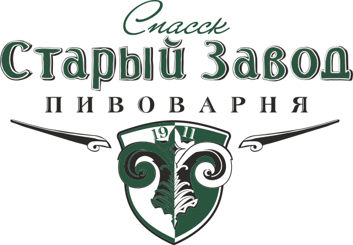

Сайт производителя пива, медовухи и сидра содержит информацию об алкогольной продукции.
Фирменные точки, бар и партнёрские магазины. Найдено адресов: ….
Рязань, ул. Почтовая, 54
вс–чт 12:00–00:00, пт–сб 12:00–02:00
+7 920 967‑56‑56
Рязанская обл., Спасский р‑н, с. Городковичи, 162
ежедневно 10:00–20:00
п. Борки, 131 (ТЦ «Солнечный»), 10–22
Муромское ш., 3 («Мясной гастроном»), 9–20
Рыбное, ул. Большая, 8Б, 10–22
Спасск‑Рязанский, Рязанское ш., 1А, 10–20
список взят со старого сайта (182 адреса) и не проверялся с 2020 года. Перед публикацией сверить с отгрузками; лучше выгружать из учётной системы автоматически.
Поставляем магазинам, барам и сетям. Доставка по Рязани и области в течение суток.
Условия для бизнеса